부안군의 문화와 예술을 대표하는 문화예술전문기관으로써 그에 맞는 다양한 문화예술 활동을
상징할 수 있는 C.I를 개발하고자 했다. 실제 부안의 변산반도에 속해 있는 채석강을 모티브로
차곡차곡 포개 놓은 듯한 퇴적암층 단애를 표현했다. 노을의 고장인 부안을 표현하는 주황색을
포인트 컬러로 더해, 심볼 마크 자체로도 상징적인 의미를 가지게 했다.
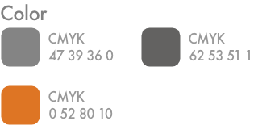
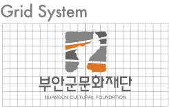
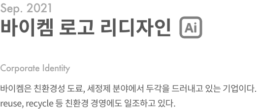
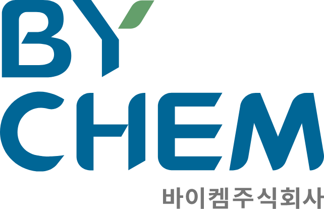
깨끗하고 정돈된 로고로 개선하여 타기업과의 차별성, 본 기업 정체성 강화하고자 하였다.
페인트 롤러를 바탕으로 군데군데 둥그런 느낌을 살리고, 포인트 녹색 컬러로 나뭇잎을
떠올리게 하는 것은 물론 친환경 기업임을 표현했다.
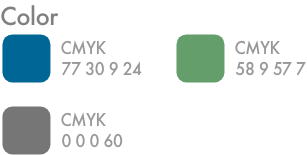
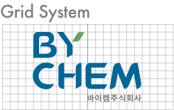
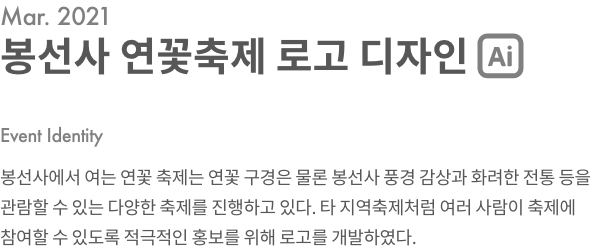
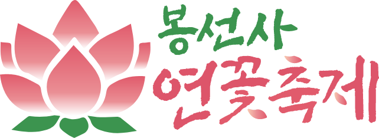
절과 꽃의 두 느낌을 살리기 위해 붓으로 그린듯한 서체로 연출하였다. 서체 사이를 꽃잎으로
대체하여 심볼과 일관성이 있도록 디자인하였고 그라데이션 효과를 활용하여 연꽃의 이미지를 살렸다.
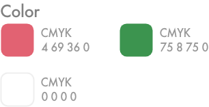
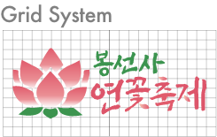
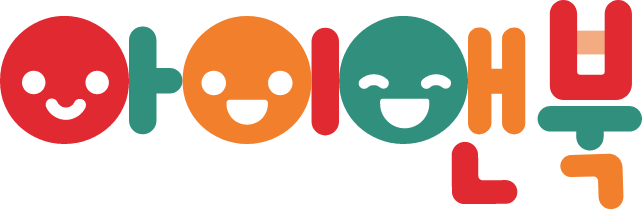
워드마크 형식의 로고로 복잡하지 않으면서도 유아 도서 출판사임을 보여줄 수 있도록 진행하였다.
둥근 서체로 유아 도서의 안전해 보이는 인상을 남겼다. 표정을 넣어서 유아의 밝고 활력있는 모습을
표현했고, 주조 색들을 불규칙적으로 배치하여 알록달록한 느낌을 주었다.